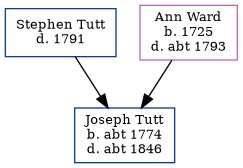

Joseph Tutt c1774 - c1846
[ Home ] | [ Calendar ] | [ Surnames Index ] | [ Census Index ] | [ Family History ]The child of Stephen Tutt and Ann Ward, Joseph Tutt, the fifth times great-uncle of Nigel Horne, was born in Aldington, Kent, England c. 17741 and baptized there on Dec 25, 1774. In 1841, he was living at his birthplace1.
He died c. 1846 in Willesborough, Kent, England and was buried in Aldington on Feb 11, 1846 (Age 72, died in WillesboroughKFHS CD17).
Parents
- Ann was born in 1725
Citations
- 1841 England Census Online publication - Provo, UT, USA: The Generations Network, Inc., 2006.Original data - Census Returns of England and Wales, 1841. Kew, Surrey, England: The National Archives of the UK (TNA): Public Record Office (PRO), 1841. Data imaged from the National
Family Tree
Generated by ged2site. Last updated on Jun 11, 2024